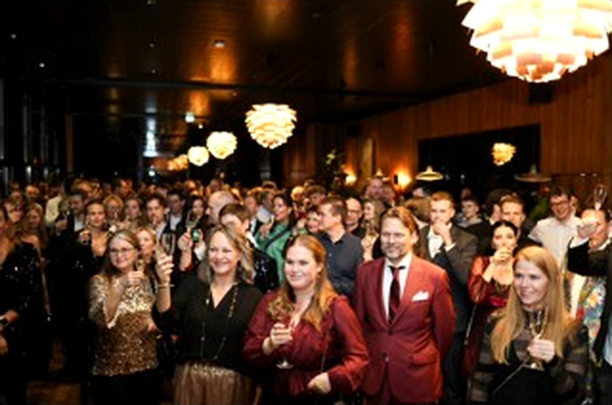
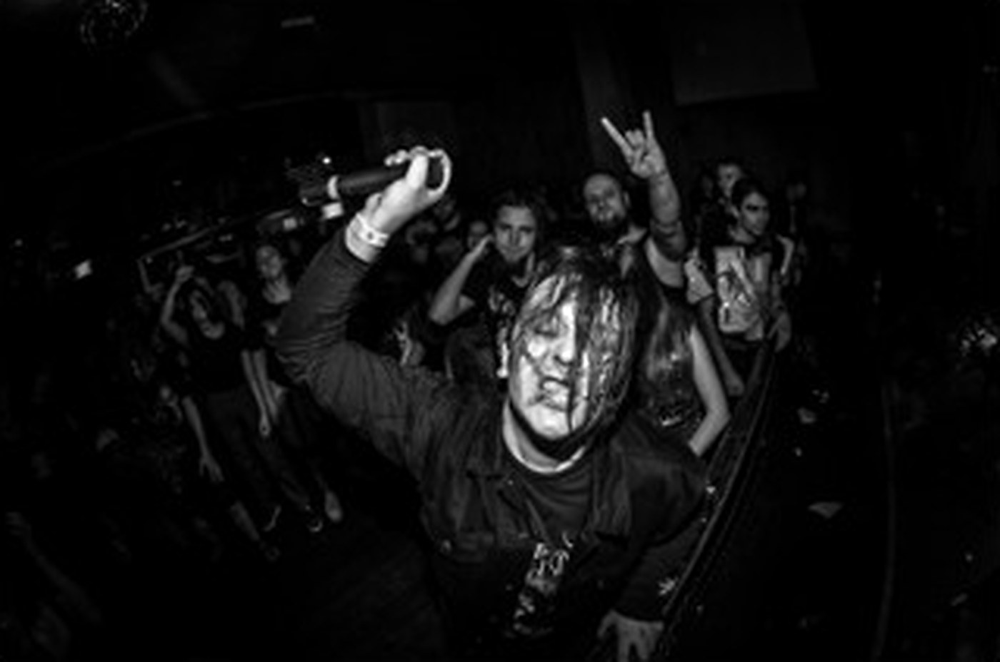
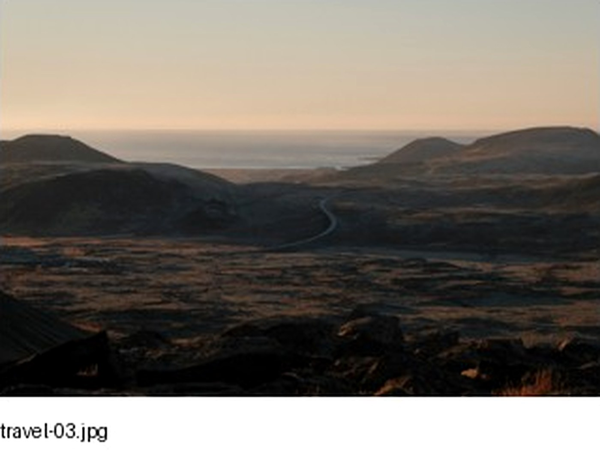

Portfolio / four sections
The work I want to keep making.
Graduation comes first right now, followed by events, concerts, and the photographs I make while traveling. As the work changes, this page can change with it.
01 / Portraits / milestones
Graduation Photos
Graduation days move fast. I like to slow them down—some posed, some candid, all made to feel like you.

02 / Gatherings / celebrations
Events
I’m there for the big moments and the smaller ones around them—the room, the details, and the people who make it feel alive.

03 / Live music / low light
Concerts
Loud rooms, difficult light, and the half-second when everything lines up.

04 / Places / no shot list
Personal / Travel
Photos I make when there isn’t a client, a timeline, or a shot list—just a place I want to remember clearly.